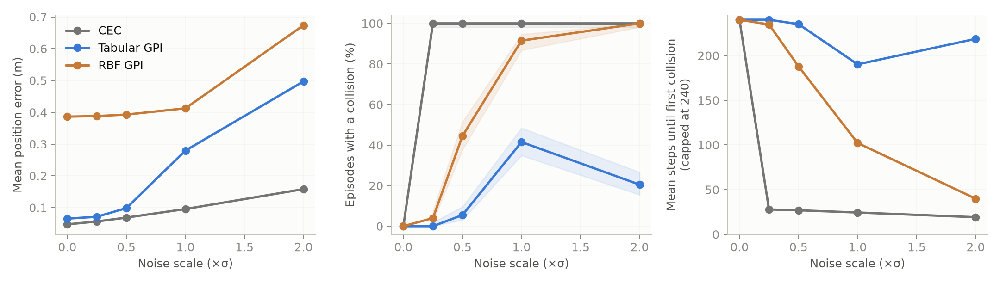
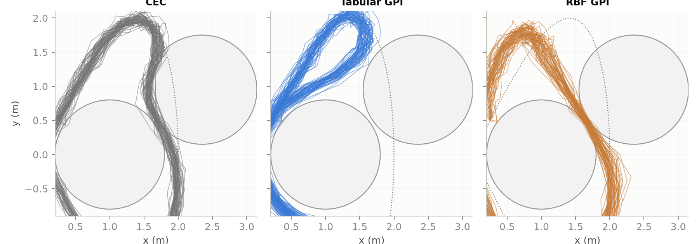
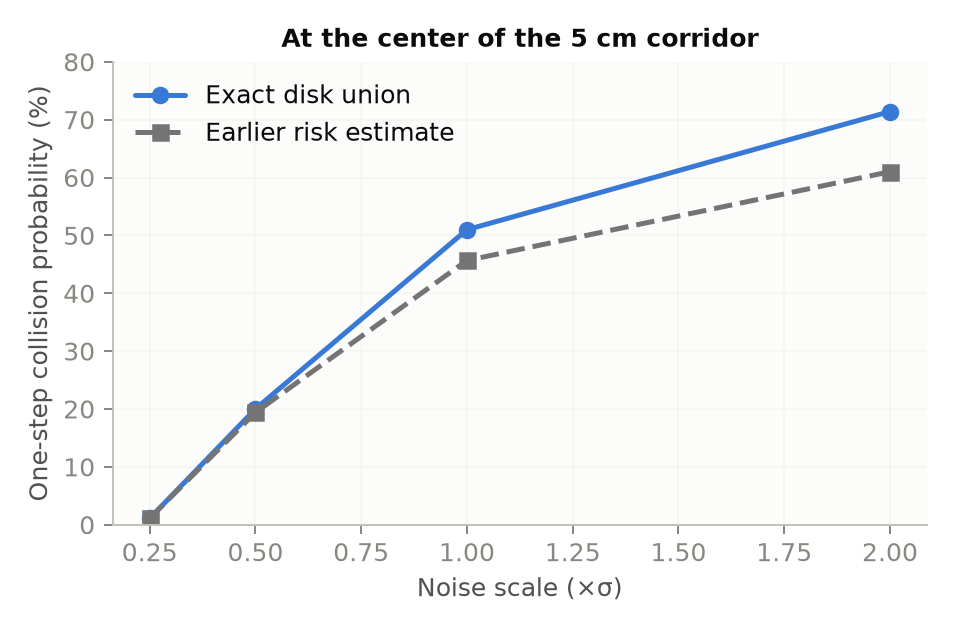
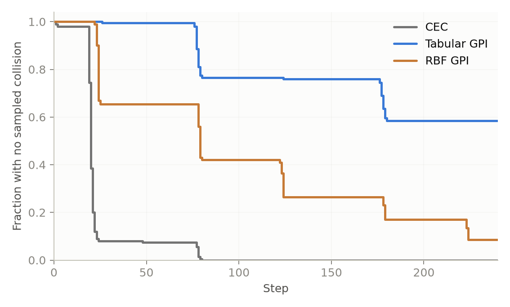
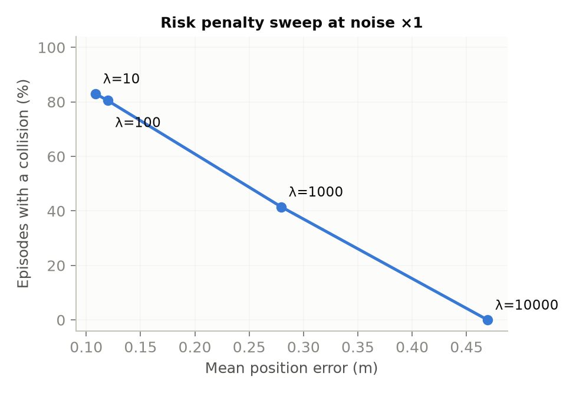
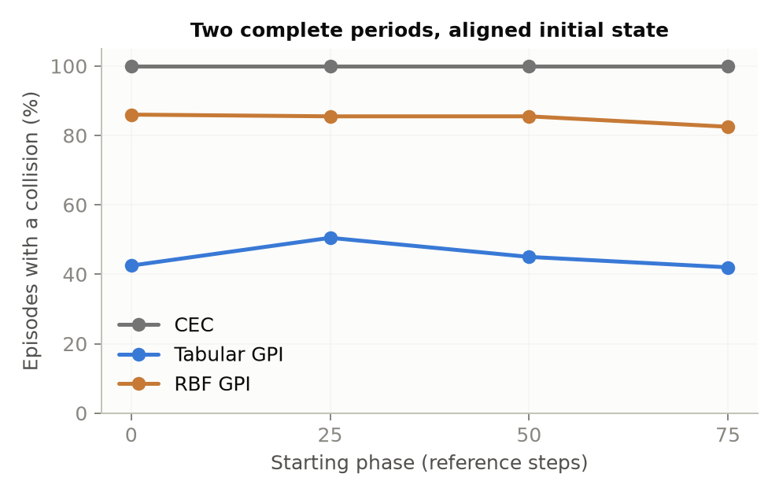

Tracking Through a Five-Centimeter Gap
A differential-drive robot has to follow a figure-eight past four circular obstacles. Its commanded motion is deterministic; every half-second, Gaussian noise perturbs its position and heading. I compared a ten-step certainty-equivalent controller (CEC), a tabular generalized-policy-iteration controller (GPI), and GPI with a compressed radial-basis-function value function (RBF GPI).
I reran the experiment after reviewing the implementation. The earlier GPI code understated collision risk in the narrow gap between two obstacles, and RBF used different value evaluations while training and controlling the robot. I corrected both, retrained the affected models, and analyzed the first collision as well as the full trajectory. The main ranking survived; several numbers and the interpretation of safety became more precise.
The result in one view
The table reports the fraction of 200 episodes that touch an inflated obstacle at a sampled state. Each method sees the same noise draws for a given seed; GPI and RBF are trained separately for each tested noise scale. The noise-free case is one deterministic run, so it is left out of this table.
| Noise scale | CEC hit | Tabular GPI hit | RBF GPI hit | GPI mean steps to first hit* |
|---|---|---|---|---|
| ×0.25 | 100% | 0% | 4% | 240 |
| ×0.5 | 100% | 5.5% | 44.5% | 235 |
| ×1 | 100% | 41.5% | 91.5% | 190 |
| ×2 | 100% | 20.5% | 100% | 219 |
*Capped at the 240-step episode length. Zero hits in 200 episodes has a Wilson 95% upper bound of about 1.9%; it is an observation, not a safety guarantee.

At noise ×1, CEC tracks most closely (mean position error 0.096 m), followed by tabular GPI (0.279 m) and RBF GPI (0.412 m). But CEC reaches its first obstacle after an average of only 24 steps, versus 190 for tabular GPI and 102 for RBF. These are different dimensions of performance: low tracking error can be achieved by following the reference through an obstacle.
Why this course layout is difficult
The robot has a 0.3 m radius. After inflating the 0.5 m obstacles, the gap between C1 and C3 is only 5.1 cm; C2 and C4 form the same gap. The figure-eight reference passes inside inflated C1 and C2. Perfect tracking is therefore incompatible with avoiding contact. A controller has to leave room within the narrow gap or take a longer route around it.

In the noise-free run, CEC has the smallest sampled tracking error, 0.047 m. Its sampled path sits at zero obstacle clearance. The exact unicycle arc between two samples cuts 1.7 cm into an inflated obstacle, even though every sampled state passes the constraint. Both revised GPI variants avoid a sampled collision in that deterministic run; the continuous-arc check also finds no collision for them. For noisy episodes, a continuous path is not specified by the discrete noise model, so the sampled collision metric remains the primary result.
The correction changed the risk calculation, not the overall ranking
The earlier risk term multiplied four obstacle-free probabilities, as if contact with different obstacles were independent. The inflated disks here are disjoint. At the midpoint of the narrow gap, a single noisy landing can hit the disk on either side, so those events must be added. I now calculate each disk probability from the exact two-dimensional Gaussian disk distribution and sum them. The 0.5 mm lookup used during training matches the analytic probability at the gap midpoint within 0.0002.

I retrained every main GPI and RBF policy with that correction. Tabular GPI's observed collision rate at noise ×1 moved from 37% to 41.5% (paired exact McNemar p = 0.23). RBF's rate at noise ×0.25 moved from 10% to 4%; that comparison also includes the RBF evaluator fix. The corrected risk is locally different, but retraining does not force a monotone improvement in closed-loop collision rate: a discrete policy can change route or margin at action boundaries.
First contact tells a different story from collision steps
The simulator keeps running after a collision. Its full-episode tracking cost and number of steps inside an obstacle remain useful descriptions of that simulated trajectory, but they include behavior after the safety task has already failed. I therefore use the first sampled hit as the main safety endpoint. An episode without a hit contributes all 240 steps to the capped mean time to first hit.

The corrected tabular policy still changes route with noise. At noise ×0.5 it uses every reference corridor passage and hits in 5.5% of episodes. At ×1 it uses 40% of those passages and hits in 41.5%. At ×2 it uses none of them and the hit rate falls to 20.5%, despite larger motion noise. Its mean position error rises from 0.098 to 0.279 to 0.497 m across those three levels. The safer high-noise policy pays for a detour.
What produces GPI's safety margin?
The corrected noise ×1 ablation independently changes the noise in the Bellman transition and the noise level used in the one-step obstacle-risk term. Every row below is evaluated on the same 200 noisy episodes.
| Bellman transition | Risk term σ | Episodes with a hit | Mean collision steps |
|---|---|---|---|
| Gaussian | 4 cm | 41.5% | 0.51 |
| Deterministic | 4 cm | 38.5% | 0.43 |
| Gaussian | 1 cm | 97.0% | 3.30 |
| Deterministic | 1 cm | 98.5% | 3.74 |
Holding the 4 cm risk term fixed, turning transition noise on does not produce a measurable safety gain in this setup (paired p = 0.53). Holding the transition model fixed, using 4 cm rather than 1 cm in the risk term changes the selected route and sharply reduces collisions (paired p < 10−30). This result is specific to the current grid, noise levels, layout, and fixed risk penalty. It says which part of this implementation changed its policy; it does not say stochastic transitions never matter.
There is a price for avoiding the gap
I also retrained the tabular policy at noise ×1 with four weights on the corrected risk probability. With λ = 10 or 100, it uses every corridor passage and hits in 83.0% or 80.5% of episodes. At λ = 1,000 it takes the inner detour on part of the figure-eight and hits in 41.5%. At λ = 10,000 it avoids the corridors altogether: no sampled hit was observed in 200 episodes, while mean position error rises to 0.470 m. Zero observed hits still has a 95% upper bound near 1.9%.

Compression still costs safety
The RBF averager stores 450,000 weights instead of 3.36 million tabular values. Both corrected controllers now evaluate the value function by the same multilinear interpolation used in their offline Bellman backups. At noise ×0.5 the resulting hit rates are 44.5% for RBF and 5.5% for the table; at ×1 they are 91.5% and 41.5%. The loss is not limited to obstacle boundaries: on noise-free reference segments more than 0.3 m clear of an obstacle, mean position error is 0.330 m for RBF and 0.016 m for the table.
The evaluator mismatch did affect the old RBF numbers. With the old risk model held fixed, changing only its online value evaluation moves the noise ×0.5 hit rate from 41% to 46.5%. Retraining with the corrected disk risk and the consistent evaluator gives 44.5%. Thus the mismatch mattered, but it does not explain the large RBF–tabular safety gap. The compression claim concerns stored value parameters: at noise ×1, measured training peak GPU memory is 877 MB for RBF and 852 MB for the table.
Does the starting phase decide the result?
The default experiment starts at reference step 2 while the controller's clock starts at step 0, creating an initial 0.557 m position error; it also runs for 2.4 periods. I repeated noise ×1 from phases 0, 25, 50 and 75, with the robot initialized exactly on the corresponding reference state, for exactly two complete periods each. There are 200 paired seeds at each phase.

In a single-process timing run, corrected tabular GPI lookahead takes 1.26 ms per control step, RBF lookahead 1.23 ms, and CEC 5.36 ms. Pure tabular lookup takes 0.16 ms, although this timing alone says nothing about its safety. All are faster than the 500 ms control period in this simulation.
What the experiment does and does not establish
- The empirical collision rates are for sampled robot centers in one simulated layout and one i.i.d. Gaussian dynamics model. They are not guarantees for continuous paths or a physical robot.
- The λ sweep and model checks reuse seeds 0–199. The zero-hit λ = 10,000 point is an exploratory result on those seeds, not a held-out safety validation.
- GPI knows the tested noise level and optimizes tracking plus a calibrated soft risk penalty. CEC uses nominal dynamics, a finite horizon, and slack-penalized obstacle constraints. Their tracking costs describe behavior under different objectives; this run does not isolate dynamic programming from model-predictive control.
- The corrected disk union is exact because these four inflated obstacles are disjoint. The combination with workspace-boundary risk remains approximate where an obstacle extends beyond the square.
- The noise-free GPI policy retains a 1 cm smoothing floor in its risk penalty. Its deterministic run is therefore a comparison of deployed policies, not a common deterministic optimization objective.
- RBF results describe this uniform Gaussian lattice and averaging fit. They do not rule out obstacle-aware features or a different compressed representation.
The next controlled comparison is to give CEC the same calibrated risk information and compare both methods at matched safety targets. I would also vary the corridor width and check how the detour threshold moves. Those interventions test whether the route and margin explanation generalizes beyond this particular five-centimeter gap.
Source and scope
The public project repository currently contains the earlier implementation and report. The corrected source and aggregate JSON used here have been prepared but are not yet published there. This article reports the corrected 200-seed rerun and first-collision analysis.
Built on the starter code of ECE 276B (Nikolay Atanasov, UC San Diego). The initial implementation used an AI coding assistant; the rerun and article revision used Codex. Numerical claims above come from the saved revised rollouts and analysis scripts.